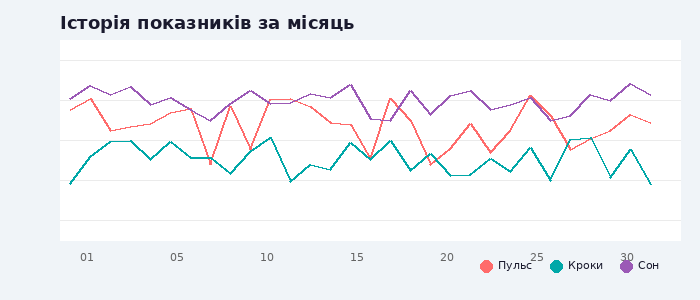

Графік показників

Переглядайте та аналізуйте ваші дані за різні періоди
| Дата | Пульс | Кроки | Сон | Вага | Настрій | Дії |
|---|---|---|---|---|---|---|
| 25.11.2025 | 72 уд/хв | 8,450 | 7.5 год | 75.2 кг | 😊 | |
| 24.11.2025 | 75 уд/хв | 12,300 | 6.5 год | 75.5 кг | 🙂 | |
| 23.11.2025 | 70 уд/хв | 9,800 | 8.0 год | 75.3 кг | 😊 | |
| 22.11.2025 | 78 уд/хв | 5,200 | 7.0 год | 75.4 кг | 😐 | |
| 21.11.2025 | 68 уд/хв | 11,500 | 8.5 год | 75.6 кг | 😊 |